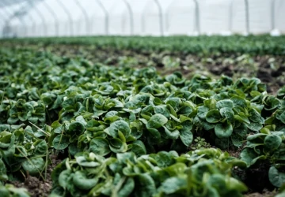

Agricultura
Agricultura
Proyectos mejorando la eficiencia en la producción dentro de invernaderos.
Inteligencia artificial e inteligencia de mercados.
conocimiento
en valor.
Utilizamos métodos cuantitativos y cualitativos para interpretar el presente.
Construye tu panorama basado en el análisis de datos. Podemos ofrecerte una amplia variedad de servicios que se ajusten a tus necesidades
Diseñamos, planeamos y ejecutamos la realización de estudios cuantitativos con levantamiento de información cara a cara, online o telefónica
Brindamos una visión enriquecida mediante grupos de enfoque, etnografías o entrevistas a profundidad.
Haz de la Inteligencia Artificial, Machine Learning, IoT una realidad transformativa para tu empresa,
Planea a largo plazo y con una visión de sostenibilidad para que tus proyectos sean de larga vida.
Somos un equipo interdisciplinario que cuenta con amplia experiencia en la realización de estudios de mercado y opinión pública a nivel nacional e internacional y en la creación de metodologías ah hoc para mejorar el entendimiento de los consumidores, usuarios o votantes. También brindamos asesoría científica y tecnológica que para automatizar y volver más eficientes y sostenibles los procesos productivos.
Contamos con experiencia en las siguientes áreas:
Proyectos mejorando la eficiencia en la producción dentro de invernaderos.
Estudios de mercado y predicción de consumo frente a situaciones emergentes. Perfilamiento de consumidores.

Intención de voto, perfilamiento de distritos. Muestreo y predicción.
Turismo sostenible, adaptación del mercado y predicciones a futuro. Integración de nuevas tecnologías.
IA para la enseñanza, el aprendizaje y la evaluación.
Generar conocimiento que permita a las personas y a las empresas tomar mejores decisiones y, a partir de ello, impulsar el desarrollo sostenible de la sociedad.
Ser líderes en la implementación de herramientas tecnológicas que permitan tanto a la gente como a las empresas alcanzar su máximo potencial de crecimiento de manera sostenible y en armonía con el medio ambiente.